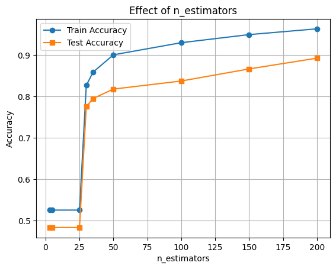
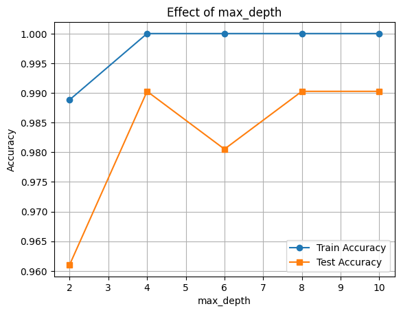
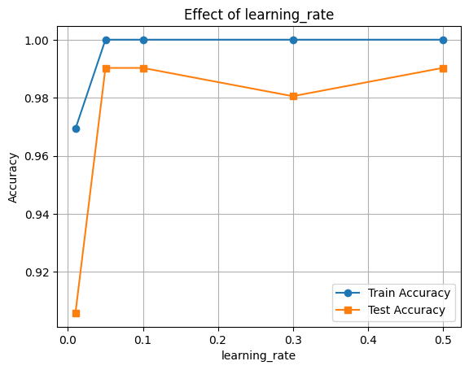
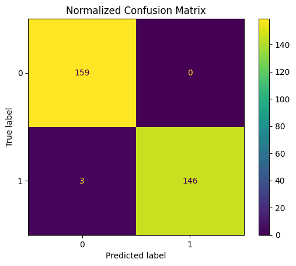
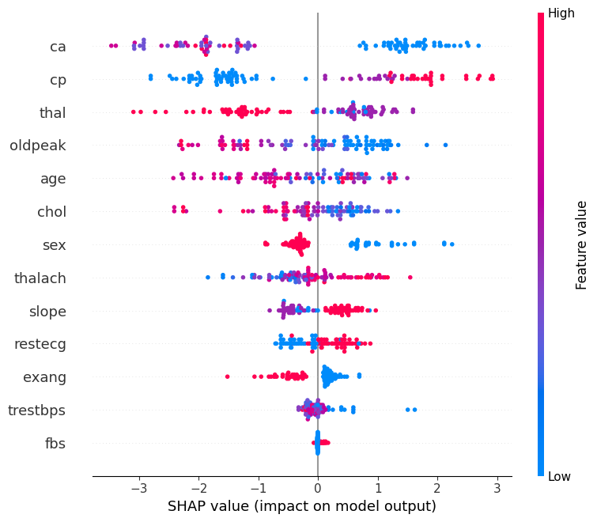

# import os
# # Set working directory manually on Gadi to be able to load csv files
# user = os.getenv('USER')
# os.chdir('/scratch/cd82/'+user+'/notebooks/')XGBoost Classification with Heart Disease Dataset
Gradient Boosting is a powerful ensemble technique that builds models sequentially. Each new model is trained to correct the errors made by the previous models. The idea is to minimize a loss function (like log loss for classification or MSE for regression) by adding weak learners (usually shallow decision trees) in a stage-wise manner.
üîÅ Core Idea of Gradient Boosting
At each step, a new model is trained to predict the residuals (errors) of the previous model: \[ \text{Residual}_i = y_i - \hat{y}_i \] Then, this new model is added to the overall prediction: \[ \hat{y}^{(t+1)} = \hat{y}^{(t)} + \eta \cdot h_t(x) \] Where: - $ ^{(t)} $: current prediction - $ h_t(x) $: new weak learner (tree) - $ $: learning rate (controls the step size)
üöÄ What is XGBoost?
XGBoost (Extreme Gradient Boosting) is an optimized version of gradient boosting that includes several improvements: - Regularization: Prevents overfitting using $ L1 $ and $ L2 $ penalties. - Parallelization: Faster training via parallel tree construction. - Handling of Missing Values: Smart ways to deal with NaNs automatically. - Tree Pruning: Uses a depth-first approach and pruning with a minimum loss reduction (gamma). - Column Subsampling: Introduces randomness (like Random Forest) via colsample_bytree.
üìâ Role of the Learning Rate ($ $)
The learning rate determines how much each tree contributes to the final prediction. It’s one of the most important hyperparameters in XGBoost:
| Learning Rate | Behavior |
|---|---|
| High ($ \() | Faster learning but may overfit. | | Low (\) $) | Slower learning, but often better generalization. Needs more trees. |
A small learning rate with a high number of estimators is generally a safer and more robust approach.
üìå Summary:
Gradient Boosting builds an ensemble of models to correct previous mistakes. XGBoost makes this process faster, more regularized, and scalable. The learning rate is a key tuning knob that balances speed and generalization.
We will focus on three key hyperparameters: - n_estimators: Number of boosting rounds. - max_depth: Maximum depth of a tree. - learning_rate: Step size shrinkage used to prevent overfitting.
We’ll also evaluate model performance and interpret it using SHAP (SHapley Additive exPlanations).
import pandas as pd
import numpy as np
import matplotlib.pyplot as plt
import seaborn as sns
from sklearn.model_selection import train_test_split
from sklearn.metrics import accuracy_score
from xgboost import XGBClassifier
import shap
from sklearn.metrics import classification_report, ConfusionMatrixDisplay
df = pd.read_csv("heart.csv")
X = df.drop("target", axis=1)
y = df["target"]
X_train, X_test, y_train, y_test = train_test_split(X, y, test_size=0.3, random_state=42)üîß Hyperparameter Tuning: n_estimators
The n_estimators parameter defines the number of boosting rounds (trees). Increasing it can improve performance but might lead to overfitting.
estimators = [3, 5, 25, 30, 35, 50, 100, 150, 200]
train_scores, test_scores = [], []
for n in estimators:
clf = XGBClassifier(n_estimators=n, learning_rate=0.002, eval_metric='logloss')
clf.fit(X_train, y_train)
train_scores.append(accuracy_score(y_train, clf.predict(X_train)))
test_scores.append(accuracy_score(y_test, clf.predict(X_test)))
plt.plot(estimators, train_scores, marker='o', label='Train Accuracy')
plt.plot(estimators, test_scores, marker='s', label='Test Accuracy')
plt.xlabel('n_estimators')
plt.ylabel('Accuracy')
plt.title('Effect of n_estimators')
plt.legend()
plt.grid(True)
plt.show()
üîß Hyperparameter Tuning: max_depth
The max_depth parameter controls the complexity of each tree. Deeper trees can learn more complex patterns but may overfit.
depths = [2, 4, 6, 8, 10]
train_scores, test_scores = [], []
for d in depths:
clf = XGBClassifier(max_depth=d, eval_metric='logloss')
clf.fit(X_train, y_train)
train_scores.append(accuracy_score(y_train, clf.predict(X_train)))
test_scores.append(accuracy_score(y_test, clf.predict(X_test)))
plt.plot(depths, train_scores, marker='o', label='Train Accuracy')
plt.plot(depths, test_scores, marker='s', label='Test Accuracy')
plt.xlabel('max_depth')
plt.ylabel('Accuracy')
plt.title('Effect of max_depth')
plt.legend()
plt.grid(True)
plt.show()
üîß Hyperparameter Tuning: learning_rate
The learning_rate parameter shrinks the contribution of each tree. Lower values require more trees but improve generalization.
rates = [0.01, 0.05, 0.1, 0.3, 0.5]
train_scores, test_scores = [], []
for rate in rates:
clf = XGBClassifier(learning_rate=rate, eval_metric='logloss')
clf.fit(X_train, y_train)
train_scores.append(accuracy_score(y_train, clf.predict(X_train)))
test_scores.append(accuracy_score(y_test, clf.predict(X_test)))
plt.plot(rates, train_scores, marker='o', label='Train Accuracy')
plt.plot(rates, test_scores, marker='s', label='Test Accuracy')
plt.xlabel('learning_rate')
plt.ylabel('Accuracy')
plt.title('Effect of learning_rate')
plt.legend()
plt.grid(True)
plt.show()
üîç Feature Importance with SHAP
Now let’s interpret the model using SHAP values to see which features were most influential.
final_clf = XGBClassifier(learning_rate=0.1, max_depth=10,n_estimators=200, eval_metric='logloss')
final_clf.fit(X_train, y_train)
# Accuracy
train_acc = final_clf.score(X_train, y_train)
test_acc = final_clf.score(X_test, y_test)
print(f"Train Accuracy: {train_acc:.3f}")
print(f"Test Accuracy: {test_acc:.3f}")Train Accuracy: 1.000
Test Accuracy: 0.990
y_pred = final_clf.predict(X_test)
print(classification_report(y_test, y_pred))
ConfusionMatrixDisplay.from_estimator(final_clf, X_test, y_test)
plt.title("Normalized Confusion Matrix")
plt.show() precision recall f1-score support
0 0.98 1.00 0.99 159
1 1.00 0.98 0.99 149
accuracy 0.99 308
macro avg 0.99 0.99 0.99 308
weighted avg 0.99 0.99 0.99 308

ü߆ Feature Importance with SHAP
We’ll use SHAP (SHapley Additive exPlanations) to understand how different features contribute to the model’s predictions.
This helps us: - Identify the most influential features - Understand direction and magnitude of impact
üìä Interpreting the SHAP Summary Plot
The SHAP summary plot visualizes how each feature contributes to the model’s output across all samples. Here’s what each component means:
| Element | Description |
|---|---|
| Y-axis (Feature Names) | Features are sorted by overall importance (top = most important). |
| X-axis (SHAP value) | The impact of that feature on the model’s prediction. |
| Each Dot | A single row/sample in the dataset. |
| Color (Dot Hue) | The feature value for that sample — red = high, blue = low. |
| Direction of SHAP Value | Positive SHAP value pushes the prediction toward the positive class (e.g., “disease” class). |
| Negative SHAP value pushes it toward the negative class (e.g., “no disease”). |
ü߆ Example Interpretation:
If the “Age” feature has mostly red dots (high values) with positive SHAP values, it means higher ages are pushing predictions toward the positive class.
import shap
explainer = shap.Explainer(final_clf, X_train)
n_datapoints = 100
shap_values = explainer(X_test[:n_datapoints])
shap.summary_plot(shap_values, X_test[:n_datapoints])